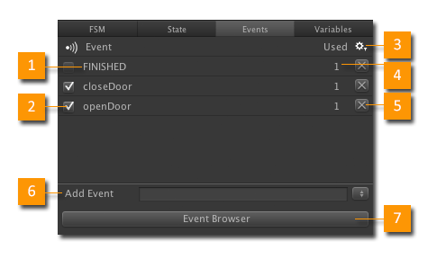
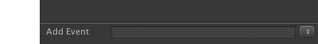
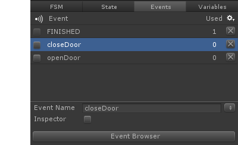
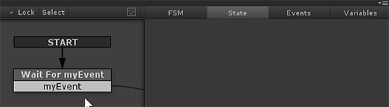
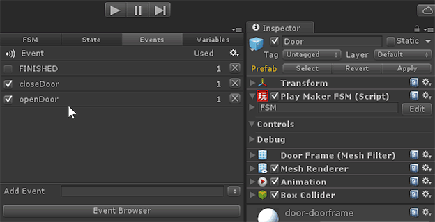

The Events Manager lets you edit the Events used by an FSM.

- Event: The name of the event.
- Global Flag: Global events can be sent between FSM.
- Settings Menu: See below.
- Use Count: Number of times the event is used in this FSM.
- Delete: Remove the event from this FSM.
- Event Editor. Add or Edit Events.
- Event Browser: Browse all the events used in your project.
Click a column header to sort the table.
Settings Menu
- Remove Unused Events: Removes any events that aren't used by this FSM.
- Event Browser: Opens the Event Browser.
- Online Help: Opens this page.
Adding an Event
Note: You can hit Escape to deselect events to quickly get to the Add Event mode.

- Add Event: Enter a new event name.
- Browser: The browse button on the right allows you to select an existing event.
Editing an Event
Select an Event in the table to edit it.

- Event Name: Edit the Event's name and hit enter. Use the Browse button to pick from all events used in the project.
- Inspector: Expose this event in the FSM Inspector as a button. Press this button at runtime to send the event.
Finding Events in the FSM
Right-click an event name to select States that use it.
Quick Tips
Double click an event in the Graph View to select it in the Event Manager:

Expose events in the Inspector to test them while playing:

See Also: